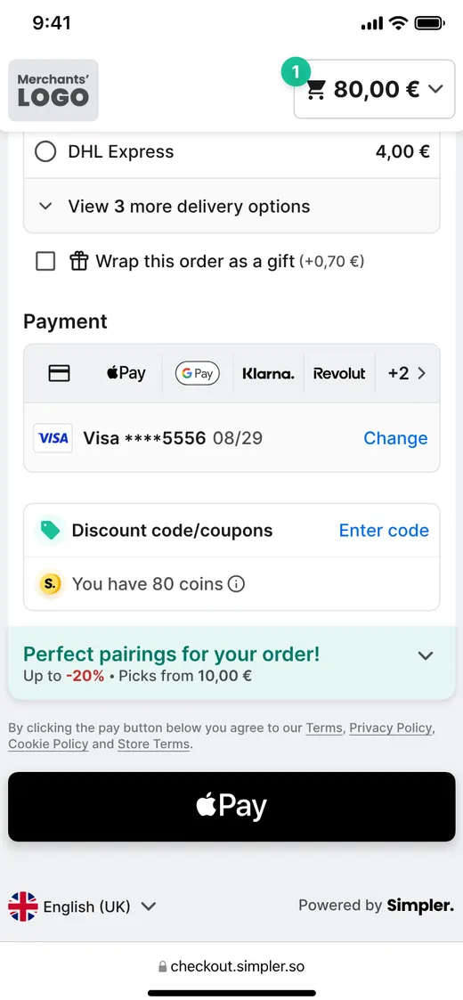
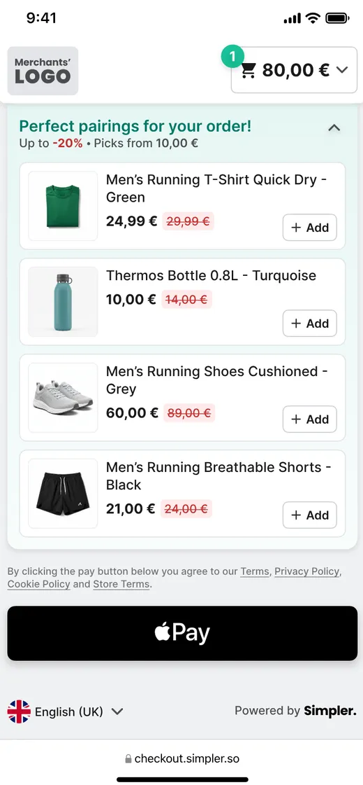
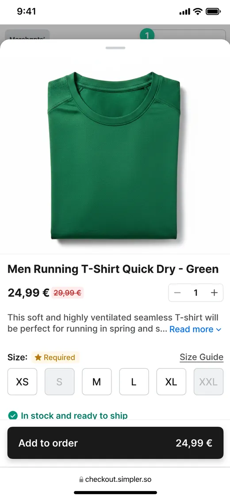
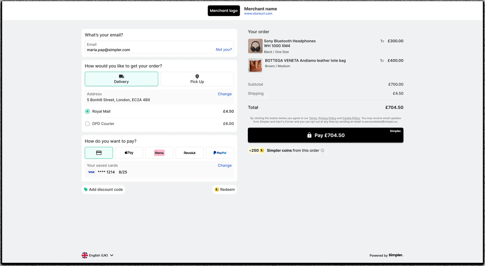
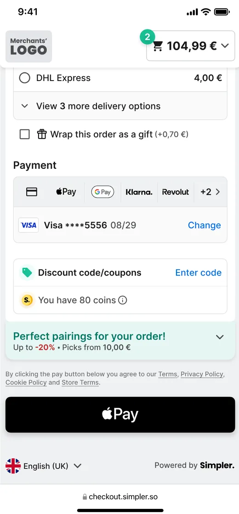
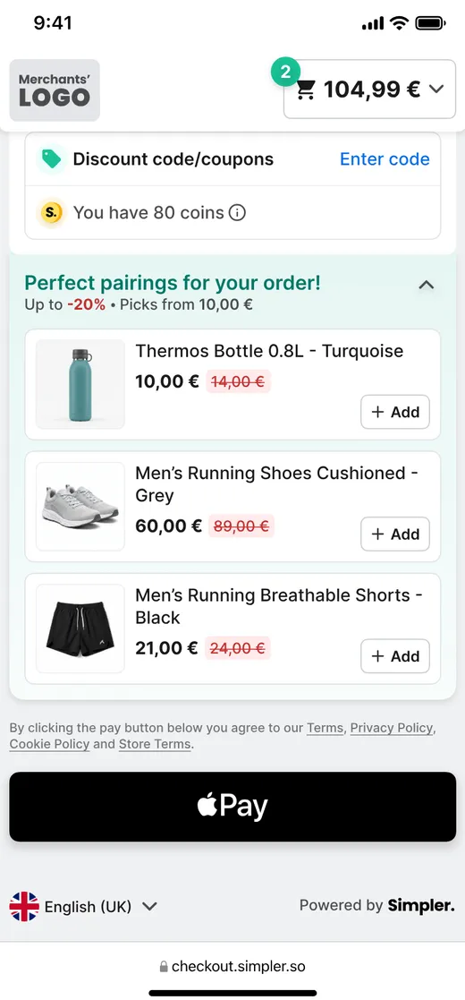
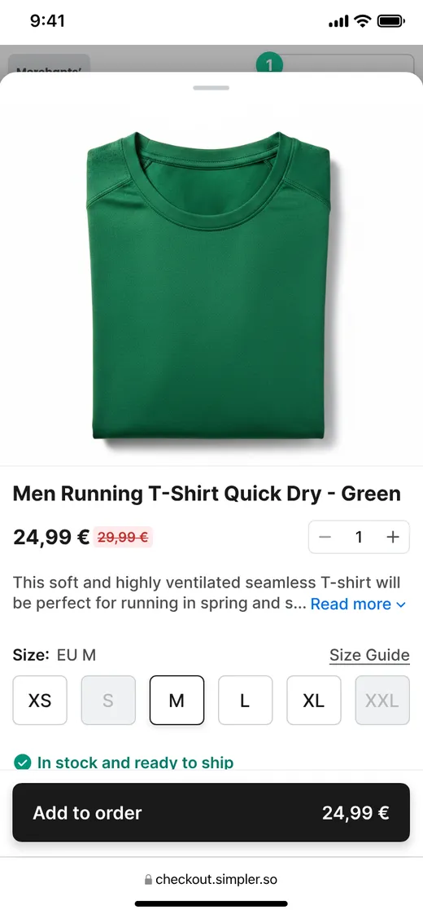
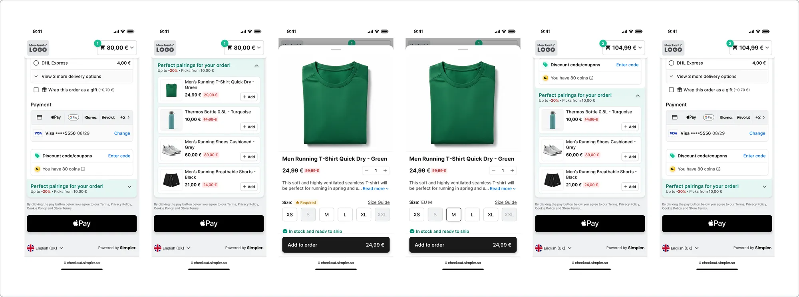

SimplerOne-click checkout
Checkout in one page. - One-click checkout UI/UX case study
A one-page checkout that remembers the shopper, keeps the total in view and adds a cross-sell that feels helpful, not pushy.



01Overview
A one-page checkout that remembers the shopper, keeps the total in view and adds a cross-sell that feels helpful, not pushy.
Simpler is a one-click checkout used by online stores. I designed the checkout experience on desktop and mobile web: email recognition, delivery or pickup, saved payment methods, discount codes and Simpler coins, plus a "Perfect pairings" cross-sell that lets shoppers add a matching product without leaving checkout.
02The challenge
What had to be solved
Every extra page in checkout loses buyers. Merchants also want to raise basket size, but pop-ups and upsell pages at the last step feel pushy and push people away.
Design goals
- Fit the whole checkout on one page
- Recognise returning shoppers and their saved details
- Keep the total and the pay button always visible
- Add cross-sell without leaving checkout
03Process
How I approached it
- One page, three questionsEmail, how to get the order and how to pay, each in one card.
- Saved by defaultReturning shoppers see their address and card ready, with a small Change link.
- Summary that staysThe order summary with subtotal, shipping, total and pay button sits beside the form on desktop.
- Pairings inside checkoutA collapsible "Perfect pairings" block with discounted add-ons and a product sheet.
04Desktop checkout
Three questions, one page.
What is your email, how would you like to get your order (delivery or pickup, with Royal Mail or DPD) and how do you want to pay (card, Apple Pay, Klarna, Revolut, PayPal). The order summary and a large Pay button stay on the right.

05Mobile checkout
The same flow, thumb-first.
On mobile the basket total stays in the header, delivery options collapse behind "View 3 more", payment methods sit in one row and Apple Pay is the primary button.

06Perfect pairings
Cross-sell that feels like a tip.
A soft green block offers matching products up to 20% off, each with an Add button. It can be collapsed, so it never blocks the path to pay.

07Product sheet
Choose a size without leaving checkout.
Tapping a pairing opens a bottom sheet with the product image, price, quantity, size picker with a size guide, stock status and "Add to order". The basket total updates straight away.

08Full cross-sell flow
From pay screen to bigger basket and back.
The six screens show the whole loop: see pairings, open one, pick a size, add it and return to a checkout with the new total, ready to pay.

09Decisions
Key design decisions
The total and the pay button never scroll away, so shoppers always know what they are paying.
Once a product is added the block folds away, keeping the page short.
"+250 Simpler coins from this order" rewards finishing, right where the decision is made.
10Design system
Visual language
Neutral greys and white cards, black for the pay action, a calm teal for selected states and pairings, small pill tags for discounts and coins, and the merchant logo kept in the header.
TypeClean grotesk, tabular prices
11Outcome
What was delivered
Simpler gets a one-page checkout for desktop and mobile that recognises returning shoppers, keeps the total in view and adds a cross-sell flow that lives inside checkout instead of interrupting it.
If the project continues, next I would:
- A/B test pairings open versus collapsed
- Design the guest-to-account flow after payment
- Add order tracking to the confirmation page
Next project
VELAJourneys shaped by altitude.View project